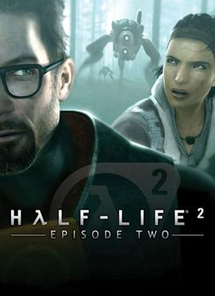

 |
|
| Tiempo de juego | No Jugado |
| Última actividad | Nunca |
| Añadido | 20/11/2025 14:14:45 |
| Modificado | 20/11/2025 14:15:23 |
| Estado de finalización | Not Played |
| Librería | Playnite |
| Fuente | 2TB GAS |
| Plataforma | Macintosh Microsoft Xbox 360 PC (Linux) PC (Windows) Sony PlayStation 3 |
| Fecha de lanzamiento | 10/10/2007 |
| Puntuación de la Comunidad | |
| Puntuación de la Crítica | 90 |
| Puntuación de usuario | |
| Género | First-person shooter |
| Desarrollador | Valve |
| Editor | Valve |
| Característica | Single-player |
| Enlaces | Wikipedia Official Half-Life 2: Episode Two website MobyGames |
| Tag | [Game Engine] Source [People] composer: Kelly Bailey [People] writer: Chet Faliszek [People] writer: Erik Wolpaw [People] writer: Marc Laidlaw |
Half-Life 2: Episode Two is a 2007 first-person shooter game developed and published by Valve. Following Episode One (2006), it is the second of two shorter episodic games that continue the story of Half-Life 2 (2004). The player controls Gordon Freeman, who travels through the mountains surrounding City 17 to a resistance base with his ally Alyx Vance. Like previous Half-Life games, Episode Two combines shooting, puzzle-solving and narrative elements, and adds expansive environments and less linear sequences.
Episode Two was released on October 10, 2007, for Windows on Valve's distribution service Steam, and as a part of The Orange Box, a compilation of Valve games for Windows, Xbox 360, and PlayStation 3. The PlayStation version was produced by Electronic Arts. Episode Two received positive reviews.
Valve canceled Half-Life 2: Episode Three when they abandoned episodic development and began developing a new game engine. In 2020, after canceling several further Half-Life projects, Valve released Half-Life: Alyx.
As with previous Half-Life games, Episode Two is played in the first person as Gordon Freeman against transhuman troops, known as the Combine, and other hostile alien creatures. Levels are linear but add a more open environment, consisting of puzzles and first-person shooter game-play. Sequences involving vehicles are interspersed throughout the game, breaking up moments of combat.
One of the focal points was the increased use of vehicles in open areas. However, the game retains its original linear style until the final battle. Episode Two has more puzzles than Episode One; the sequence in which the player must cross a damaged bridge is the biggest physics puzzle in the series. As in the previous two games, Episode Two features numerous "achievements" (similar to PlayStation 3's Trophies and Xbox Live's Achievements) for carrying out certain tasks. Some are essential to game progress, such as helping fight off an antlion invasion, or defeating the first Hunters. Others are optional tricks or feats the player can perform, such as killing a Combine soldier with their own grenade or running down a certain number of enemies with the car.
Episode Two featured a new Hunter enemy, which had just been seen briefly in a recorded message in Episode One. The Hunter serves as one of the most dangerous enemies within the game and as means of emotional development for Alyx Vance. The Hunter is a powerful and resilient enemy which players must often run from while seeking a means to fight back; Episode Two's environments are designed with this in mind.
An interview in the August 2006 issue of PC Gamer magazine revealed that the Hunter stands 8 feet (2.4 m) tall. Erik Johnson, the game's project lead, states that the Hunters are "big and impressive, but they can go anywhere the player can go", as the player can encounter them both indoors and outdoors. Ted Backman, senior artist for Valve, talks about how the Hunter can express emotions, being a somewhat non-human character. "We want the Hunter to be able to express nervousness or aggression, [to show you] whether it's aggressive, hurt, or mad." Hunters are very aggressive and they tend to operate in packs, but can also be found supporting other Combine troops. Late in the game, they can be found escorting Striders, using their flechette guns to protect the Striders that the player is trying to attack.
Hunters primarily attack the player by bracing themselves and firing bursts from their flechette cannon. Four flechettes can vaporize an ordinary human soldier. If they do not strike a living target, the flechettes charge up for several seconds and then explode, dealing minor damage to everything nearby. Hunters may also conduct a charging attack or strike with their legs if the player gets too close. Hunters are vulnerable to all weapons, but to compensate, are still quite resilient, making explosives and the pulse rifle's charged energy ball the most attractive options. Objects thrown with the gravity gun are also effective, especially if the player catches some of their flechettes with the object before hurling it. In outdoor environments, they can be run over with a vehicle.
Episode Two features no additions to Gordon Freeman's weapons inventory. Instead, Valve chose to further explore uses for the gravity gun, with which the player can pick up and throw large objects. They introduced more varied gravity gun "ammunition", such as logs, flares, and half-height butane tanks, which are easier to aim than full-size fuel drums.
Near the end of the game, the player uses "Magnusson Devices", which designer Dario Casali described as a "sticky bomb that you fire at a Strider's underbelly that will draw power from the Strider's internal power source". The player uses the gravity gun to attach the bombs to tripodal enemy Striders; the bombs detonate when fired upon with any other of the player's weapons, instantly destroying the target. The Hunter escorts prioritize them as targets, either destroying them in the player's grasp or shooting already-attached ones off.
Large sections of the game feature a car which resembles a gutted-and-rebuilt 1969 Dodge Charger. It appears to have been tuned for performance. A radar system is installed later in the game, allowing the player to locate Rebel supply caches. In the final battle, a rear-mounted storage rack for Magnusson Devices is added and the radar is adjusted to track enemies and Magnusson Device dispensers. A homing unit is also installed so the player can quickly locate the car in the chaos of the final battle via a readout in the Hazardous Environment suit.
The Combine have opened an interdimensional portal in place of the destroyed Citadel, to summon reinforcements and defeat the Resistance. Outside City 17, Gordon Freeman and Alyx Vance (Merle Dandridge) escape the wreckage of a train they used to flee the city. The two proceed to a transmission station, where they make contact with Dr. Isaac Kleiner (Harry S. Robins) and Dr. Eli Vance (Robert Guillaume), who have arrived at the White Forest rocket facility. Kleiner and Eli learn that a copied Combine transmission Alyx is carrying may be able to close the portal. The pair reach an abandoned mine, where Alyx is critically wounded by a Combine Hunter. A vortigaunt (Tony Todd) leads the two to an underground outpost, where Gordon is instructed to help gather larvae from a nearby antlion colony to heal Alyx. After the larvae are gathered, vortigaunts begin to heal Alyx. With their abilities diverted, the G-Man (Michael Shapiro) can now connect to Gordon. He reveals that he rescued Alyx from the Black Mesa Incident despite objections from an unspecified third party, and it is imperative she reaches White Forest. The G-Man instructs an unconscious Alyx to tell Eli to "prepare for unforeseen consequences".
After Alyx recovers, they reunite with Eli, Kleiner and Dog at White Forest and are introduced to Dr. Arne Magnusson (John Aylward). The scientists are preparing a rocket which they plan to use with the code to reverse the portal. After Gordon subdues a Combine attack on the facility, Alyx gives Kleiner a message recorded by Judith Mossman (Michelle Forbes), which contains the location of the Borealis, a vanished Aperture Science research vessel. Kleiner believes the vessel contains technology capable of combating the Combine, but Eli argues the vessel should be destroyed. Both agree that Alyx and Gordon should travel to the ship and locate Mossman. Alyx unconsciously delivers the G-Man's message to her father, troubling him. Gordon learns from Eli that the G-Man provided the test sample which caused the Black Mesa Incident, warning Eli with the same message as Gordon entered the test chamber. He promises to explain more after the portal is closed.
While the scientists prepare the launch, White Forest is under another Combine attack. Gordon defeats the attackers using explosive weaponry created by Magnusson. The scientists launch the rocket and close the portal, trapping all remaining Combine forces on Earth. As Alyx and Freeman prepare to leave for the Borealis, Eli warns Gordon about the ship's "cargo". The trio head to a hangar to board a helicopter, but two Combine Advisors suddenly appear and restrain them. Eli is killed by an Advisor before Dog can chase the Advisors away. Alyx, sobbing, clutches her father's body.
Episode Two was the second in a planned trilogy of shorter episodic games that would continue the story of Half-Life 2 (2004). It was developed simultaneously with Episode One (2006) by a team led by David Speyrer. This schedule of simultaneous development aided them in streamlining the story between the two games to create an immersive story. The technology used was the same for both games, allowing the development teams to quickly fix any technical problems that might arise from either game; this happened often because of the multi-platform release. The team originally planned the ending to feature a comical sequence with Lamarr, Kleiner's pet headcrab, floating in space outside the rocket Gordon launches into space; however, Valve president Gabe Newell requested killing off a major character to create a cliffhanger for Episode Three.
On July 13, 2006, Valve announced that Episode Two would be released on Xbox 360 and PlayStation 3 in addition to Windows. Valve handled the development for the PC and Xbox 360, while Electronic Arts (EA) worked on the PlayStation 3 version. It was announced on September 7, 2007, that the PlayStation 3 version would be delayed because the EA studio behind the game was in the United Kingdom, away from Valve's development team, and therefore lagged behind in its schedule. According to Valve's marketing director, Doug Lombardi, the Xbox 360, PlayStation 3 and Windows versions would be identical in functionality and performance. An audio commentary is also featured, as in Episode One and Lost Coast. Tony Todd replaced Louis Gossett Jr. as the voice of the Vortigaunts.
Half-Life 2: Episode Two received an average score of 90.68% based on 22 reviews on the review aggregator GameRankings. On Metacritic, it has an average score of 90 out of 100 based on 21 reviews, indicating "universal acclaim". As part of The Orange Box compilation, Episode Two shared with Portal and Team Fortress 2 in winning "Computer Game of the Year" at the 11th Annual Interactive Achievement Awards.
Dan Adams of IGN rated the game 9.4 out of 10 and praised its improved visuals and expansive environments, but cited the short six-hour length as a drawback. He said: "Any way you look at it, Episode Two stands out, even among the Half-Life series, as something special ... a burly experience packed into roughly six hours or so that offers up all the diversity, level design, and thoughtful gameplay we've known while making sure to propel the story forward and leave us wanting more." Bit-tech awarded the game a ten out of ten score, citing approval of how the story turns and the introduction of side stories and new characters. 1UP.com said that it was "vivid, emotionally engaging, and virtually unsurpassed". PC Gamer UK felt that Episode Two was "the most sumptuous chapter of the Half-Life saga, and by a country mile". The New York Times enjoyed the gameplay, saying that battles "often require as much ingenuity as they do fast reflexes".
Computer and Video Games said that, although the Source engine was dated, the "wonderful art design and the odd bit of technical spit-shine ensure that Episode Two [...] doesn't lose any of its wow factor". They also noticed that the game "goes about fixing a lot of the niggling complaints we had about Episode One," applauding the open forests and rocky hills. The New York Times wrote that "while it sows a few seeds for the final episode of the trilogy, the game lacks the driving force of the previous episode". GameSpy felt that it was less consistent than its predecessors, and that the opening segments were "arguably the weakest".
Half-Life 2: Episode Three was scheduled for release by Christmas 2007. It was canceled after Valve abandoned episodic development and began developing a new game engine, Source 2. After canceling several further Half-Life games, Valve released Half-Life: Alyx in 2020. In November 2024, Valve delisted Episode One and Two from the Steam Store and incorporated them into Half-Life 2.
In reference to the Episode Two achievement "Little Rocket Man", which requires the player to carry a garden gnome from the start to the end of the game and place it into a rocket before it launches into orbit, Newell partnered with Wētā Workshop and Rocket Lab to create and launch a garden gnome on their "Return To Sender" space mission. The mission launched on November 20, 2020, from Mahia Launch Complex, New Zealand, as a mass simulator.